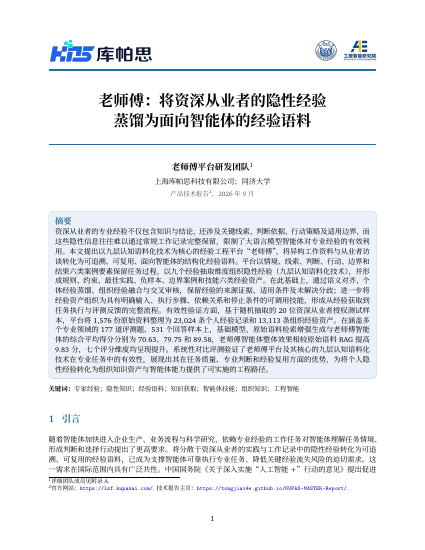
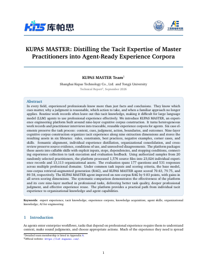

老师傅 KUPAS MASTER
让隐性经验成为智能体的能力。
以九层认知语料化技术，将资深从业者的判断、行动与适用边界，转化为可追溯、可复用的经验语料与可调用技能。

英文技术报告
KUPAS MASTER: Distilling the Tacit Expertise of Master Practitioners into Agent-Ready Experience Corpora
下载英文版平台概览
保留结论背后的专业判断。
专业经验不仅是“知道什么”，还包括关注什么、为什么这样判断，以及何时不再适用。
老师傅平台将分散的工作记录与从业者访谈，整理为可审核、可在组织内复用、可供智能体调用的结构化经验。
06案例要素
情境、线索、判断、行动、边界、结果。
09抽取维度
组织事实、推理、行动及反馈中的隐性经验。
06经验资产库
规则、约束、最佳实践、负样本、边界案例、技能。
产品框架
经验如何成为智能体的能力。
从原始资料出发，经过结构化提炼与审核，让专业经验进入智能体的实际任务。
提炼专业判断
从工作记录与从业者访谈中，保留情境、线索、判断、行动、边界和结果，并以九个认知维度组织其中的经验。
形成可复用资产
将个人经验融合为组织层面的规则、约束、最佳实践、负样本、非常规情形和技能六类资产，审核时保留来源证据与适用条件。
支撑任务执行
智能体在任务中检索经审核的经验、调用结构化技能，再通过任务结果与运行记录，反馈下一轮经验采集和修订。
KUPAS MASTER从经验到能力
来源证据
工作记录从业者访谈
09
核心技术
九层认知语料化
L1知识L2注意L3判断L4决策L5联想L6预判L7监控L8习惯L9约束
06
六类经验资产经审核的证据与可调用技能
核心技术
九个维度，理解完整经验。
九层认知语料化技术，连接来源证据、专业推理与适用条件。选择一个维度，查看其抽取内容。
L3认知语料化
什么依据支持这一判断？
从显式推理中提取判断目标、正反证据与排除条件，保留连接条件与结论的中间前提。
结构化输出
包含适用条件、成立与失效边界及证据引用的判断规则。
证据缺失保留待复核，支持分不等同于正确概率。
经验工程流程
从个人经验，到组织能力。
七步流程贯通经验获取、资产构建与智能体评测，在转换过程中保留来源、条件与审核状态。
- 01
场景定义
明确角色、任务、目标与决策边界。
- 02
数据归集
汇集工作记录、访谈与补充证据。
- 03
语义对齐
对齐跨来源的术语、实体与事件。
- 04
个体蒸馏
以九层技术提炼个人候选经验资产。
- 05
组织融合
归并共性，保留情境差异与分歧。
- 06
交叉审核
检查证据依据、适用条件与表达准确性。
- 07
评测反馈
评价任务质量，反馈补充采集与资产修订。
持续迭代
以已审核的资产快照支撑智能体执行，再将任务评测反馈至下一轮采集与审核。
效果评测
经验的价值，用任务表现衡量。
在受控内部评测中，基于相同专业任务对比基础模型、原始语料 RAG 与老师傅智能体三种配置。
经验如何参与任务
让经验进入实际处理流程。
报告中的工伤纠纷调解案例，展示经验资产如何补充证据要求、程序边界与处理步骤。
基础模型
给出一般性分析框架和证据清单，未明确区分调解与工伤认定的程序边界。
原始语料 RAG
引用相关法规条款并提出调解步骤，提示部分程序与风险边界。
老师傅智能体
调用“调解请求判断与聚焦技能”，结合规则库与非常规情形库，区分权限边界并生成结构化结果文件。（结论更可靠、考虑更全面、输出更对口）
技术报告
了解完整方法与实验依据。
从结构化表示、抽取管线、组织融合到技能构建、效果评测与部署方案，查阅完整技术说明。
英文技术报告
KUPAS MASTER: Distilling the Tacit Expertise of Master Practitioners into Agent-Ready Experience Corpora
从技术到部署
平台支持云端使用与定制化本地部署。对于敏感业务场景，可结合本地模型与内网工具，将数据处理限定在客户环境内，并配置身份认证、分级授权与操作审计。